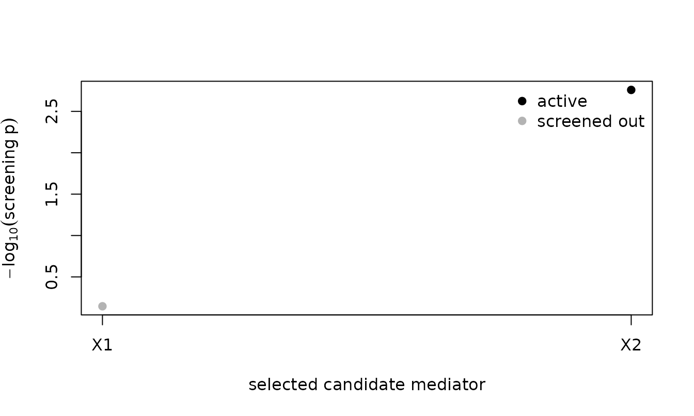

This vignette is written for a reader who is comfortable with regression but new to high-dimensional mediation. It explains the problem the package solves, builds up the idea behind the power-enhanced tests, then walks through a first analysis, the output, the different outcome types, a simulation study, and finally the real data application from the article. You do not need to have read the article first; pointers to it appear where the details live.
1. What is a mediation analysis?
A mediation analysis asks how an exposure affects an
outcome. Instead of only asking whether a treatment X
changes an outcome Y, it asks whether X works
through an intermediate variable M, the
mediator. The classic picture is a chain:
a b
X -----> M -----> Y
\ /
\________ c' _________/
(direct)The effect of X on Y that travels through
M is the indirect effect: in a linear
model it is the product a * b of the X -> M
path and the M -> Y path. The part of X’s
effect that does not go through M is the direct
effect c'. Their sum is the total
effect.
In modern applications there is rarely a single mediator. Genomics
studies screen thousands of methylation sites; the application later in
this vignette has 57 health-expenditure indicators. When there are many
candidate mediators M = (M_1, ..., M_p), the natural first
question is simply:
Is there any active mediator at all? That is, does
XaffectYthrough any of the candidate mediators?
This is a single global hypothesis test, and it is what POEM is built to perform with high power.
2. The problem: total-indirect-effect tests have a blind spot
With many mediators, the conventional approach summarizes them by the
total indirect effect, written beta: the
sum over all mediators of each one’s individual indirect effect. The
global test then checks whether beta = 0.
This works well when the mediators all push the outcome the same way.
But consider two active mediators whose individual indirect effects are
equal in size and opposite in sign: say
+0.5 through M_1 and -0.5 through
M_2. Both mediators are genuinely active, yet their
contributions cancel, so the total indirect effect is
beta = (+0.5) + (-0.5) = 0.A test built on beta sees zero and concludes “no
mediation,” even though two mediators are plainly active. This is not a
rare edge case: whenever different pathways move an outcome in opposite
directions (heterogeneous mediation, and in the extreme
contrasting mediation), the total indirect effect
understates the truth and the test loses power. The article calls this
out as the core limitation of existing high-dimensional mediation
tests.
3. The idea: a power enhancement component
The power-enhanced (PE) test fixes the blind spot by adding a second
piece that cannot cancel. After a penalized fit selects a small set of
candidate-active mediators, the PE component J_m adds up,
over those mediators, the magnitude of each one’s
combined path signal. In code notation, with alpha_hat[j]
the estimated M -> Y coefficient of mediator
j, Gamma_hat[i, j] the estimated
X -> M coefficient from exposure i, and
se_* their standard errors:
J_m = sqrt(p) * sum over exposures i and selected mediators j of
|alpha_hat[j] / se_alpha[j]| * |Gamma_hat[i, j] / se_Gamma[i, j]|
* 1{both paths individually significant}Two things matter here. First, the indicator keeps a mediator only
when both its X -> M path and its
M -> Y path are individually significant, so noise
mediators do not contribute. Second, because J_m sums
absolute values, a +0.5 mediator and a
-0.5 mediator reinforce each other instead of
cancelling. The full test statistic is M_PE = S_n + J_m,
the benchmark Wald statistic S_n (the total-indirect-effect
test) plus the enhancement. Under the global null of no mediation, the
screen rejects every mediator, so J_m = 0 and
M_PE behaves exactly like S_n (same chi-square
reference distribution, so the same Type I error rate). Under
heterogeneous alternatives, J_m grows large and the test
gains power. That is the whole idea: keep the size, add power
exactly where the old test was blind.
The same indicator that builds J_m also tells you
which mediators are active, with familywise error rate control
(the default) or false discovery rate control.
4. A first analysis, step by step
The package can simulate data so you can see the method work before
bringing your own. simulate_mediation_data() generates the
patterns studied in the article. Here is a contrasting
setting: a few active mediators whose effects cancel to a zero total
indirect effect.
set.seed(113)
d <- simulate_mediation_data(n = 200, p = 60, outcome = "continuous",
pattern = "contrasting", c1 = 1)The result is a list. The four pieces an analysis needs are the exposure, outcome, mediators, and (optionally) confounders:
dim(d$X) # exposure: 200 observations, 1 column
#> [1] 200 1
length(d$Y) # outcome: 200 values
#> [1] 200
dim(d$M) # mediators: 200 x 60
#> [1] 200 60
d$active_mediators # which mediators are truly active (the ground truth)
#> [1] 1 2 3 4
d$beta # the total indirect effect: zero, by construction
#> [1] 0So four mediators are genuinely active, but the total indirect effect is zero because their effects cancel. This is precisely the situation that defeats a total-indirect-effect test. Now run the global test:
fit <- pe_mediation(d$X, d$Y, d$M, outcome = "continuous")
fit
#> term value
#> stat_hdmm 0.03881
#> pval_hdmm 0.8438
#> stat_pe 174.2
#> j_pe 174.1
#> pval_pe < 0.0001
#> total_indirect_effect 0.01054
#> total_indirect_lower -0.0943
#> total_indirect_upper 0.1154
#> n_active_mediators 1
#> df 1
#> n_candidate_mediators 60
#> n_observations 200
#>
#> Outcome model: continuous (linear)
#> Active mediators identified (1): 2
#> Tuning parameter (HBIC): lambda = 0.199 from 20 values in [0.199, 0.388] (the grid's lower end)Read the two p-values. pval_hdmm is the benchmark Wald
test on the total indirect effect; it is large, so that test fails to
detect any mediation (exactly the blind spot from Section 2).
pval_pe is the power-enhanced test; it is essentially zero,
so it detects the mediation decisively. The footer lists the individual
mediators it flagged as active. The power enhancement, made
concrete.
5. Reading the result table
Every POEM test returns a tidy table that prints with sensible rounding (whole numbers without decimals, p-values to four places) while storing full precision underneath. The rows are:
| term | meaning |
|---|---|
stat_hdmm, pval_hdmm
|
the benchmark Wald statistic S_n and its p-value (the
total-indirect-effect test of Guo et al.) |
stat_pe, pval_pe
|
the power-enhanced statistic M_PE and its p-value |
j_pe |
the power enhancement component J_m (the amount added
to S_n) |
total_indirect_effect |
the estimated total indirect effect beta
|
n_active_mediators |
how many individual mediators were identified as active |
df |
degrees of freedom of the chi-square reference (the number of exposures) |
n_candidate_mediators, n_observations
|
p and n
|
To pull a number out, index the table like any data frame; the stored value keeps full precision even though the display rounds:
fit$value[fit$term == "pval_pe"] # the exact p-value
#> [1] 9.154634e-40
attr(fit, "active_mediators") # the active mediator indices
#> [1] 26. Identifying which mediators are active
The active set is controlled by the method argument. The
default, "Bonferroni", controls the familywise error rate:
it is conservative, so when it flags a mediator you can be confident,
but it may miss weak ones. The "BH" and "BY"
options control the false discovery rate instead and typically recover
more mediators.
des_idx <- function(f) attr(f, "active_mediators")
des_idx(pe_mediation(d$X, d$Y, d$M, outcome = "continuous", method = "Bonferroni"))
#> [1] 2
des_idx(pe_mediation(d$X, d$Y, d$M, outcome = "continuous", method = "BH"))
#> [1] 2The target error rate is error_level (default 0.05). It
is distinct from the significance level you use to read
pval_pe; the global test is insensitive to it.
7. Binary and count outcomes
The same construction works for non-continuous outcomes through a link function. Name the outcome type and the front end dispatches to the logistic (binary) or Poisson (count) model. The total indirect effect is then on the link scale (log-odds for binary, log-mean for count).
set.seed(113)
db <- simulate_mediation_data(n = 250, p = 50, outcome = "binary",
pattern = "contrasting", c1 = 1, c2 = 1)
pe_mediation(db$X, db$Y, db$M, outcome = "binary")
#> term value
#> stat_hdmm 0.009973
#> pval_hdmm 0.9205
#> stat_pe 172.5
#> j_pe 172.5
#> pval_pe < 0.0001
#> total_indirect_effect -0.01329
#> total_indirect_lower -0.2741
#> total_indirect_upper 0.2475
#> n_active_mediators 1
#> df 1
#> n_candidate_mediators 50
#> n_observations 250
#>
#> Outcome model: binary (logistic)
#> Active mediators identified (1): 2
#> Tuning parameter (HBIC): lambda = 0.05 from 20 values in [0.05, 1] (the grid's lower end)8. A simulation study: size and power
pe_power_curve() reproduces the article’s Monte Carlo
studies. It sweeps the signal strength c1, simulating many
data sets at each value and recording how often each test rejects. At
c1 = 0 (no mediation) the rejection rate estimates the Type
I error rate; at nonzero c1 it estimates power. A rate from
n_rep replications carries a Monte Carlo standard error of
about sqrt(r * (1 - r) / n_rep), so the 40-replication run
below knows a rate near 0.05 to within about 0.03 and a rate near 0.5 to
within about 0.08.
set.seed(113)
pc <- pe_power_curve(n = 150, p = 50, outcome = "continuous",
pattern = "contrasting", c1_grid = c(0, 0.25, 0.5, 0.75, 1),
n_rep = 40)
pc
#> c1 rejection_hdmm rejection_pe n_valid n_empty
#> 0 0.025 0.05 40 0
#> 0.25 0.025 0.025 40 0
#> 0.5 0.025 0.075 40 0
#> 0.75 0.05 0.175 40 0
#> 1 0.225 0.375 40 0
#>
#> Outcome: continuous
plot(pc$c1, pc$rejection_pe, type = "b", pch = 19, ylim = c(0, 1),
xlab = expression(c[1] * " (signal strength)"),
ylab = "empirical rejection rate",
main = "Contrasting mediation: PE vs. benchmark")
lines(pc$c1, pc$rejection_hdmm, type = "b", pch = 1, lty = 2)
abline(h = 0.05, col = "grey60", lty = 3)
legend("right", c("power-enhanced", "benchmark Wald"), pch = c(19, 1),
lty = c(1, 2), bty = "n")At c1 = 0 both tests reject at about the nominal rate.
As the contrasting signal grows the benchmark rejects in 22 percent of
replications at c1 = 1 and the power-enhanced test in 38
percent. That is the enhancement at work, but at this small design it is
modest, and the reason is worth knowing. The default tuning grid is the
article’s grid rescaled to n and p (see
?pe_lambda_grid), and its lower end is set where the
mediators the test names keep their familywise error guarantee. At
n = 150 and p = 50 that floor also removes
signal. The review-era grid, 20 values from 0.05 to 1, trades the
guarantee for power on the same simulated data sets:
pc_review <- pe_power_curve(n = 150, p = 50, outcome = "continuous",
pattern = "contrasting",
c1_grid = c(0, 0.25, 0.5, 0.75, 1), n_rep = 40,
lambda_grid = seq(0.05, 1, length.out = 20),
seed = 113)
pc_review
#> c1 rejection_hdmm rejection_pe n_valid n_empty
#> 0 0.05 0.075 40 0
#> 0.25 0.025 0.1 40 0
#> 0.5 0 0.3 40 0
#> 0.75 0.025 0.75 40 0
#> 1 0.1 0.975 40 0
#>
#> Outcome: continuousWith it the power-enhanced test rejects in 98 percent of replications
at c1 = 1, but the mediators it names can include null
ones: at the article’s design that grid raises the identified set’s
familywise error rate from 0.000 to about 0.17. At the article’s design
(n = 300, p = 500, 1000 replications) the
default grid gives the article’s Figure 1(b): the power-enhanced test
rejects in about 76 percent of replications at c1 = 1 and
the benchmark in about 15 percent, and at c1 = 0.5 the
printed rates are 0.331 and 0.087 (the reproduction vignette runs those
settings). Choose the grid by what the analysis needs: the default when
the identified mediators will be reported, the wider grid when only the
global test matters at a small design.
9. The real application: health spending as a mediator
The package ships the article’s empirical data,
WHO_health_mediation: a panel of 91 WHO member states over
2000–2021. The exposure is annual growth in GDP per capita, the
candidate mediators are 57 health-expenditure indicators from the WHO
Global Health Expenditure Database, and there are five health outcomes
(infant and under-five mortality, life expectancy, low birthweight, and
undernourishment). The substantive question: does health
spending mediate the relationship between economic growth and population
health?
data(WHO_health_mediation)
dim(WHO_health_mediation)
#> [1] 2002 68
WHO_health_mediation[1:3, c("country", "region", "income", "year",
"gdp_growth", "imr", "gge_gdp")]
#> country region income year gdp_growth imr gge_gdp
#> 1 Argentina AMR Upper-middle 2000 -1.906987 17.3 25.2
#> 2 Argentina AMR Upper-middle 2001 -5.453797 16.8 26.4
#> 3 Argentina AMR Upper-middle 2002 -11.845950 16.4 21.9The 57 mediators are strongly intercorrelated (many are different
normalizations of the same spending), which is exactly the
high-dimensional, correlated-mediator regime the method targets. Their
definitions are in WHO_indicator_codebook:
head(WHO_indicator_codebook, 4)
#> indicator
#> 1 che_gdp
#> 2 che_pc_usd
#> 3 che
#> 4 gghed
#> description
#> 1 Current Health Expenditure (CHE) as % of Gross Domestic Product (GDP)
#> 2 Current Health Expenditure (CHE) per capita in US$
#> 3 Current Health Expenditure (CHE)
#> 4 Domestic General Government Health Expenditure (GGHE-D)Building one analysis design
WHO_mediation_design() assembles the exposure, outcome,
mediator, and confounder matrices for a chosen outcome, handling the
missing-data coverage and the confounders (region, income group, and
year) for you. The article standardizes the exposure and the mediators
and centers the outcome, but leaves the confounder indicators unscaled;
the call below does the same by hand and passes
scale = FALSE.
des <- WHO_mediation_design("imr") # infant mortality rate
c(observations = des$n, mediators = ncol(des$M), confounders = ncol(des$Z))
#> observations mediators confounders
#> 2002 57 9
fit <- pe_mediation(scale(des$X), des$Y - mean(des$Y), scale(des$M),
Z = des$Z, outcome = "continuous", scale = FALSE,
lambda_grid = seq(0.1, 5, length.out = 100))
active <- des$indicators[attr(fit, "active_mediators")]
WHO_indicator_codebook$description[
match(active, WHO_indicator_codebook$indicator)]
#> [1] "General Government Expenditure (GGE) as % of GDP"The PE test identifies general government expenditure as a share of
GDP (gge_gdp) as the mediator through which economic growth
reaches infant mortality, which is the article’s global finding.
Reproducing the article’s table
WHO_mediation_analysis() runs the whole set of models
the article reports for one outcome (global, then within each WHO region
and income group), using the article’s preprocessing, and returns a
table in the shape of the article’s Table for that outcome.
res <- WHO_mediation_analysis("imr", groupings = c("global", "region"),
lambda_grid = seq(0.1, 10, length.out = 40))
res[, c("group", "n_countries", "pval_hdmm", "pval_pe", "active_mediators")]
#> group n_countries pval_hdmm pval_pe active_mediators
#> ALL 91 0.0409 < 0.0001 gge_gdp
#> AFR 32 0.4415 0.4415 none
#> AMR 28 0.4129 0.4129 none
#> EMR 8 0.0304 0.0304 none
#> EUR 9 0.0035 < 0.0001 gge_gdp
#> SEAR 5 0.3087 < 0.0001 ext_usd2021_pc
#> WPR 9 0.8721 < 0.0001 chi_che, pvtd_gdpCompare the benchmark and PE columns. In several regions the
benchmark test sees nothing (pval_hdmm large) while the PE
test rejects decisively and names the responsible indicator: in the
Western Pacific region, for example, the benchmark p-value is near 1 yet
the PE test detects compulsory health insurance and private expenditure
as active mediators. These are the cases where heterogeneous mediation
hides the signal from the conventional test, and they reproduce the
findings in the article.
summary() reads that comparison off the table for you,
counting the groups where the PE test detects mediation the benchmark
misses:
summary(res)
#> POEM comparison: IMR
#> groups: 7 (7 with data), alpha_level = 0.05
#> detected by benchmark (HDMM): 3 by power-enhanced (PE): 5
#> PE detects mediation in 2 groups the benchmark misses:
#> group n_countries pval_hdmm pval_pe active_mediators
#> SEAR 5 0.309 4.13e-41 ext_usd2021_pc
#> WPR 9 0.872 3.77e-83 chi_che, pvtd_gdp
#> most-flagged mediators:
#> gge_gdp 2
#> chi_che 1
#> ext_usd2021_pc 1
#> pvtd_gdp 1Why the preprocessing matters
WHO_mediation_analysis() applies the article’s
preprocessing internally. Passing the raw design to
pe_mediation() with the default scale = TRUE
standardizes the confounder indicators as well, and that is a different
model: on the same tuning grid the benchmark Wald p-value moves from
about 0.041 to about 0.23, and the penalized selection adds a second
indicator, social health insurance (shi_che).
raw <- pe_mediation(des$X, des$Y, des$M, Z = des$Z, outcome = "continuous",
lambda_grid = seq(0.1, 5, length.out = 100))
c(article_preprocessing = fit$value[fit$term == "pval_hdmm"],
raw_matrices = raw$value[raw$term == "pval_hdmm"])
#> article_preprocessing raw_matrices
#> 0.04094124 0.23191044
des$indicators[attr(raw, "active_mediators")]
#> [1] "shi_che" "gge_gdp"Use the article’s preprocessing (or
WHO_mediation_analysis(), which applies it) whenever the
goal is to reproduce its numbers.
10. Beyond the global test: the toolkit
The global test is the core, but POEM ships a few conveniences around it.
A formula interface for data frames
If your variables live in a data frame, pe_mediate()
takes a formula for the outcome and exposure, the names of the mediator
columns, and (optionally) confounder names, and calls
pe_mediation() for you.
set.seed(113)
d <- simulate_mediation_data(n = 200, p = 60, outcome = "continuous",
pattern = "contrasting", c1 = 1)
df <- data.frame(y = d$Y, x = d$X[, 1], d$M)
meds <- grep("^X", names(df), value = TRUE) # the mediator columns
fit <- pe_mediate(y ~ x, data = df, mediators = meds, outcome = "continuous")Why each mediator? The per-mediator table
pe_mediators() opens up the screening step: for every
candidate mediator the penalized fit selected, it shows the two path
statistics, the two path p-values, the combined screening p-value, and
whether the mediator was flagged active. This is how you see
why the test reached its conclusion.
pe_mediators(fit)
#> mediator name t_outcome t_exposure screen_p selected
#> 1 X1 18.22 0.3641 0.7158 FALSE
#> 2 X2 -7.179 3.131 0.0017 TRUEplot() shows the same evidence graphically, the
screening strength of each selected mediator with the active ones
highlighted.
plot(fit)
broom verbs
tidy() returns the per-mediator table and
glance() a one-row summary, so a POEM result drops into
broom and tidyverse workflows.
glance(fit)
#> stat_hdmm pval_hdmm stat_pe pval_pe total_indirect_effect
#> 1 0.03881027 0.843825 174.1554 9.154634e-40 0.01053815
#> n_active_mediators n_observations
#> 1 1 200All three multiplicity methods at once
Pass report_all_methods = TRUE and
pe_selection() reports the active set under Bonferroni
(familywise error rate), Benjamini-Hochberg, and Benjamini-Yekutieli
(false discovery rate) side by side, as the supplement of the article
does.
fit_all <- pe_mediation(d$X, d$Y, d$M, outcome = "continuous",
report_all_methods = TRUE)
pe_selection(fit_all)
#> method n_active j_pe stat_pe pval_pe active_mediators
#> Bonferroni 1 174.1 174.2 < 0.0001 2
#> BH 1 174.1 174.2 < 0.0001 2
#> BY 1 174.1 174.2 < 0.0001 2Planning the sample size
ss_power_pe_mediation() plans a study: over a grid of
candidate sample sizes it estimates the power of the PE test by
simulation and reports the smallest sample size that reaches the target
power. It runs a Monte Carlo study, so it is shown here but not
evaluated.
plan <- ss_power_pe_mediation(outcome = "continuous", pattern = "contrasting",
p = 50, n_grid = c(80, 120, 160, 200),
target_power = 0.8, n_rep = 100)
plan
attr(plan, "recommended_n")11. Bringing your own data
To analyze your own study, arrange:
-
X: ann-by-qmatrix of exposures (often one column). -
Y: a length-noutcome (continuous, 0/1, or counts). -
M: ann-by-pmatrix of candidate mediators (pmay exceedn). -
Z(optional): ann-by-dmatrix of confounders.
then call pe_mediation(X, Y, M, Z, outcome = ...). The
defaults standardize the inputs as the method assumes, choose the tuning
parameter by a high-dimensional information criterion from a grid whose
lower end keeps the identified set’s error-rate guarantee, and control
the familywise error rate when identifying active mediators. Everything
returned is an ordinary data frame you can index, save, or plot, and the
print footer reports the tuning parameter chosen.
When POEM Is the Right Tool, and When It Is Not
The tests assume a linear (or generalized linear) outcome model with a sparse set of active mediators, standardized inputs, and complete data. Some practical limits, seen on simulated data during the package’s release audit:
- Sample size. The penalized selection needs
nlarge relative tolog(p)and to the signal; withnnear 100 andpin the thousands under the contrasting pattern the selection keeps a single mediator and the power-enhanced test has no power to add. The default grid’s floor rises asnfalls (see?pe_lambda_grid), which protects the identified set but costs global power at small designs; the section on the simulation study above shows the size of that cost. - Strongly correlated mediators. With an autoregressive correlation of 0.9 among neighboring mediators the selection keeps one representative of a correlated block, so the identified set is unstable from sample to sample even when the global test rejects.
- Rare binary outcomes. With about 2 to 3 percent events at
n = 300the penalized logistic fit selects nothing at any grid value; the fit is empty and the function says so (see?pe_mediation). - Overdispersed counts. The count model is Poisson; under negative
binomial overdispersion its size was not inflated at
n = 200,p = 100, but about a tenth of the fits were empty. - Missing values are not handled; complete the data first.
References
Yu, X., and Kelley, K. (in press). Power Enhancement in High-Dimensional Heterogeneous Mediation Analysis. Journal of the American Statistical Association.
Fan, J., Liao, Y., & Yao, J. (2015). Power enhancement in high-dimensional cross-sectional tests. Econometrica, 83(4), 1497–1541. https://doi.org/10.3982/ECTA12749
Guo, X., Li, R., Liu, J., & Zeng, M. (2022). High-dimensional mediation analysis for selecting DNA methylation loci mediating childhood trauma and cortisol stress reactivity. Journal of the American Statistical Association, 117(539), 1110–1121. https://doi.org/10.1080/01621459.2022.2053136
Session Information
sessionInfo()
#> R version 4.6.1 (2026-06-24)
#> Platform: x86_64-pc-linux-gnu
#> Running under: Ubuntu 24.04.5 LTS
#>
#> Matrix products: default
#> BLAS: /usr/lib/x86_64-linux-gnu/openblas-pthread/libblas.so.3
#> LAPACK: /usr/lib/x86_64-linux-gnu/openblas-pthread/libopenblasp-r0.3.26.so; LAPACK version 3.12.0
#>
#> locale:
#> [1] LC_CTYPE=C.UTF-8 LC_NUMERIC=C LC_TIME=C.UTF-8
#> [4] LC_COLLATE=C.UTF-8 LC_MONETARY=C.UTF-8 LC_MESSAGES=C.UTF-8
#> [7] LC_PAPER=C.UTF-8 LC_NAME=C LC_ADDRESS=C
#> [10] LC_TELEPHONE=C LC_MEASUREMENT=C.UTF-8 LC_IDENTIFICATION=C
#>
#> time zone: UTC
#> tzcode source: system (glibc)
#>
#> attached base packages:
#> [1] stats graphics grDevices utils datasets methods base
#>
#> other attached packages:
#> [1] POEM_1.0.0
#>
#> loaded via a namespace (and not attached):
#> [1] cli_3.6.6 knitr_1.52 rlang_1.3.0 xfun_0.61
#> [5] otel_0.2.0 generics_0.1.4 textshaping_1.0.5 jsonlite_2.0.0
#> [9] htmltools_0.5.9 ragg_1.5.2 sass_0.4.10 glmnet_5.1
#> [13] rmarkdown_2.32 grid_4.6.1 evaluate_1.0.5 jquerylib_0.1.4
#> [17] fastmap_1.2.0 foreach_1.5.2 yaml_2.3.12 lifecycle_1.0.5
#> [21] compiler_4.6.1 codetools_0.2-20 fs_2.1.0 Rcpp_1.1.2
#> [25] lattice_0.22-9 systemfonts_1.3.2 digest_0.6.39 R6_2.6.1
#> [29] ncvreg_3.16.0 splines_4.6.1 shape_1.4.6.1 bslib_0.12.0
#> [33] Matrix_1.7-5 withr_3.0.3 tools_4.6.1 iterators_1.0.14
#> [37] survival_3.8-6 pkgdown_2.2.1 cachem_1.1.0 desc_1.4.3